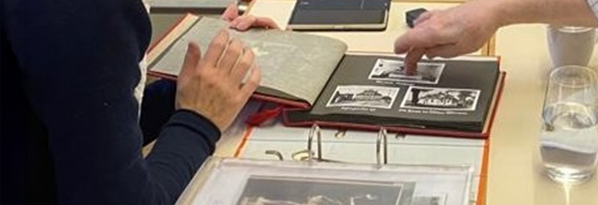

Architektur ist durch Erzählungen anders erlebbar. Mit meiner Vortragstätigkeit möchte ich Menschen von Bauwerken erzählen, die kaum von der Öffentlichkeit wahrgenommen werden. Für jeden Vortrag erstelle ich ein individuell angepasstes Plakat und stelle es in digitaler Form den Organisierenden zur Verfügung um besser für die Veranstaltung werben zu können.
Die Vorträge werden auf Deutsch, Englisch und Französisch vor Ort und digital angeboten. Ich bringe eine langjährige Vortragserfahrung mit und mir ist es wichtig den Vortrag an das jeweilige Publikum anzupassen.
Bisherige Vorträge (Auswahl)
27. Oktober 2025
SCAM, Paris
30. November 2024
Katholische Allerheiligenkirche München
14. April 2024
Evangelische Nikodemuskirche München: "Marienlieder und die griechisch-orthodoxe Nachbargemeinde Allerheiligen"
28. Januar 2024
Katholische Allerheiligenkirche München: "Eine architektonische Umwandlung: Von der Röm.-kath. Allerseelenkirche
zur Griechisch-Orthodoxen Allerheiligenkirche in München" vor 50 Personen.
27. November 2023
Gr.-Orth. Allerheiligenkirche München: "Die Gr.-Orth. Allerheiligenkirche in München. Ein Baupojekt der Ökumene als kulturelle und geistige Brücke zwischen Ost und West" Offizielle Buchvorstellung mit 100 Gästen.
24. November 2023
Eidgenössische Technische Hochschule Zürich, Schweiz: "How did a research become a book within a year?" vor 15 Personen.
20. November 2023
Technische Universität München, Deutschland: Gastvorlesung vor ca. 40 Personen
18. Oktober 2023
Zentralinstitut für Kunstgeschichte in München, Deutschland: Workshop "Die Griechisch-Orthodoxe Allerheiligenkirche" als Abschluss des Stipendiums vom Theodor-Fischer-Preis 2022
07. Juli 2019
Ecole Polytechnique Fédérale de Lausanne, Schweiz: Verteidigung der Doktorarbeit "Les «vestiges» de l’opération Million dans l’oeuvre de Georges Candilis - Actualités et Strategies de sauvegarde pour un patrimoine du second après-guerre)" vor 40 Personen.
März 2016
United Nations New York Conference "Cities of the Future", USA: Präsentation des Projektes "InterAging Home"
März 2015
16th China International Real Estate & Architectural Technology Fair in Beijing: Präsentation des Projektes "CubAge Quartier"
Februar 2014
United Nations New York Conference "Cities of Tomorrow", USA: Präsentation des Projektes "CubAge Quartier"
Und das Lampenfieber?
Als Kind war ich immer nervös vor anderen Menschen auf der Bühne zu stehen - beispielsweise bei Klaviervorspielen oder Tanzprüfungen...Ein Wendepunkt vor vielen Menschen sprechen zu müssen kam 2014: Als Preisträgerin des International Council for Caring Communities (ICCC) Student Design Wettbewerbes 2014 (Team 3. Preis) stellte ich Projekte zum Thema soziale Integration bei der UN in New York und Beijing vor. Die Vorträge im Zusammenhang damit haben mir die Angst genommen, vor großem Publikum zu sprechen. An der ETH Zürich stand ich regelmässig vor 100 Studierenden am Redepult. Entspannt auf der Bühne zu stehen ist eine Sache der Übung und Routine...
Foto: Sereina Fritsche
Lesungen für Kinder
2024 habe ich ein Kinderbuch über Umbau statt Neubau geschrieben, das von Meruert Zharekesheva von Hand illustriert wurde. Das Buch “Mein NEUES altes Haus” erzählt die Geschichte der kleinen Lilian, deren hellblaues Haus abgerissen werden soll. Doch dann fragt sich Lilian, warum wir unsere Häuser eigentlich nicht zuerst reparieren und sie schreibt dem Besitzer einen Brief.
Hier wird das Thema Nachhaltigkeit und Umbau in Architektur liebevoll den ganz Kleinen nähergebracht. Daraus habe ich ein Konzept für eine Veranstaltung speziell an Kinder gerichtet entwickelt. Auf einem Stuhl nimmt ein besonderer Gast Platz: das blaue (Filz)Haus! Warum ist es traurig, frage ich die Kinder. Dann lese ich aus menem Buch vor (ab 4 Jahren, jünger willkommen) und anschliessend entdecken alle zusammen spielerisch - meist in zwei Gruppen - den Häuserkreislauf.
Die Veranstaltung wurde schon in der Schule Freilager, in zwei Kindergärten in Zürich und München, in einer Kita der Stiftung Kihz und im GZ Bäckeranlage gegeben. Das Feedback des jungen Publikums war überwältigend positiv begeistert.
Darf ich einmal für Sie/Ihre Klasse/Ihre Gruppe/Ihre Familienfeier/Ihre Veranstaltung/Ihr Geburtstagsfest lesen kommen?
Kontaktieren Sie mich gerne!
Publikationsberatung
I am happy to assist you with your project in German, English, French, Italian or Greek.
Sie haben die Idee oder sogar schon ein Manuskript und wissen nicht, was daraus werden kann? Gerne begleite ich Sie dabei. Bevor Sie eine Beratung in Anspruch nehmen setzten Sie sich am Besten mit folgenden Fragen auseinander:
Wer ist das Zielpublikum?
Was ist das vorhandene Material? Sind u.a. Bildrechte geklärt?
Wie soll das Produkt aussehen, digital oder Print? Es hat sich als sehr hilfreich erwiesen ein Referenzprodukt aus Ihrer Bibliothek für das Erstgespräch bereit zu halten.
Was ist die Zeitschiene?
Basis-Paket
Dieses Angebot ist für Sie attraktiv, wenn Sie eine erste Orientierung suchen.
2 x Beratungsgespräch à 45min
Erstellung eines Konzeptes (inkl. Richtungen für Grafikdesign) für Ihr Buch oder digitale Publikation.
Liste für den spezifischen Fall in Frage kommender Verläge, die für eine Printversion kontaktiert werden können.
Erweiterte Publikationsbegleitung (auf Anfrage)
Dieses Angebot ist für Sie attraktiv, wenn Sie bis zum fertigen Produkt Unterstützung suchen.
Phase 1 - Erstellung eines Konzeptes (inkl. Richtungen für Grafikdesign) für Ihr Buch oder digitale Publikation.
Phase 2 - Layouterstellung
Referenzen
Neben und während meiner beruflichen Tätigkeit konnte ich diverse Erfahrungen in der Erstellung von Publikationen sammeln. Dabei kenne ich sowohl die Perspektive als Autorin als auch als Herausgeberin.
Zwischen 2022 und 2023 habe ich ein Buch über einen Kirchenbau der 1990er Jahre geschrieben, gestaltet und gelayoutet. Es ist 2023 beim Kunstverlag Josef Fink erscheinen.
2020 habe ich meine Doktorarbeit (700 Seiten), ausgerichtet für ein wissenschaftliches Publikum, in ein Leser-freundliches Manuskript (300 Seiten) gewandelt, das 2024 bei einem französischen Verlag erscheinen wird.
Besonders spannend war es die experimentelle Publikationsformen des TACK-Projektes als Projektmanagerin an der ETH Zürich zwischen 2019 und 2023 zu begleiten. Die hauptsächlich digital publizierten Beiträge sind als Print-on-Demand-Bücher bestellbar und können inhaltlich von der Leserschaft selbst zusammengesetzt werden.
Während meiner Arbeit an der ETH Zürich habe ich zwischen 2019 und 2022 für Prof. Markus Peter 11 Reader (je 200 Seiten) überarbeitet und bis zum Druck begleitet.
Seit August 2023 unterstütze ich als Mit-Herausgeberin einen Ausstellungskatalog an der Ecole Polytechnique Fédérale de Lausanne, der 2024 erscheinen soll.

Historische Aufarbeitung
Sie wollen mehr über die Geschichte eines Gebäudes erfahren oder das Gebäude (Kirche, Firmensitz, Wohnhaus...) einem breiteren Publikum vorstellen oder seine Geschichte für die Nachwelt festhalten?
Für meine Quellen suche ich neben dokumentarischem Material auch bewusst Gespräche mit Zeitzeugen. Aussagen - soweit möglich - werden geprüft und oft sind sie die entscheidenden Puzzlestücke, um ein Gebäude aufzuschlüsseln. Wie lebt es sich in dem Gebäude? Welche Probleme gab es? Wer waren die entscheidenden Akteure bei der Errichtung?
Dies führte mich immer zu sehr wertvollen Begegnungen, die über die Forschung hinaus noch oft nachhallen. Zuhören und die richtigen Nachfragen stellen sind dabei mein Handwerkszeug.
Nachlassbewertung
Vor der Digitalisierung produzierte ein Architekturbüro unzählige Akten in Papierform. In manchen Fällen entsorgen die Urheber selbst noch im hohen Alter wertvolles Material ohne den Wert der eigenen Arbeit in einem weiteren Kontext einschätzen zu können. Schnell wird voreilig etwas weggeworfen oder geschreddert…So geht oft wertvolles historisches Material verloren. Daher biete ich archivische Bewertung und Beratung zum Umgang von Nachlässen im Zusammenhang mit Architektur.
Oft ist die nachfolgende Generation mit der Masse an Dokumenten überfordert oder braucht neue Lagerfläche. Nicht selten hängt dabei ein emotionaler Wert an dem Nachlass, dem sich die Nachfahren gegenüber verpflichtet fühlen. Sie wissen nicht wohin mit einem Nachlass aus der Baubranche? Sie wünschen Ihre Familiengeschichte aufzuarbeiten und für zukünftige Generationen zu sichern bzw. bekannter zu machen? Mit einem bewussten Umgang eines Nachlasses können Sie beispielsweise durch Übergabe an ein öffentliches Archiv auch Forschenden ermöglichen einen Teil unbekannter Architekturgeschichte zu entdecken.
Bevor eine Nachlassbewertung stattfinden kann, sollten Sie sich über folgende Fragen Gedanken machen und im Idealfall erste Auskunft darüber geben können:
Von wem stammt der Nachlass? Einzelperson oder Gemeinschaftsbüro?
Sind alle erbrechtlichen Fragen geklärt? Sie müssen sicherstellen, dass Sie der rechtmäßige Eigentümer der Unterlagen sind.
Wie groß ist der Umfang des Nachlasses? Angabe in Ordner-Anzahl oder Anzahl der Kisten unter Angabe der Größe einer Kiste
Um was für Unterlagen handelt es sich? Arten der Unterlagen: A4 Dokumente, Planzeichnungen (von Hand oder CAD gedruckt, Papier oder Skizzenpaper). Gerade Skizzenpapier wird im Alter gerne trocken und teilweise brüchig – dies Bedarf besonderer Vorsicht beim Öffnen von Planrollen
Soll der Nachlass als Ganzes zusammen bleiben oder sind Teilnachlässe denkbar?
Bei einer Abschätzung des Umfangs sollten Sie beachten:
Es kann auch alltäglicher Schriftverkehr erhaltenswert sein, jedoch sich Archive in der Regel nicht an einer Übernahme von Bankauszügen, Personalakten oder privatem Schriftverkehr innerhalb der Familie interessiert
Verträge mit Bauherren können u.a. noch mit Urheberrecht verbunden sein und sollten – je nach Interesse – besser in Familienhand bleiben
Basis-Paket
Dieses Angebot ist für Sie attraktiv, wenn Sie eine erste Orientierung suchen.
2 x Beratungsgespräch à 45min
Erstellung eines Kurzberichtes über den Nachlass auf Basis der von Ihnen zur Verfügung gestellten Informationen (über Umfang, Zustand, historische Einordnung), der für die Kontaktaufnahme mit Archiven und anschließende Gespräche als Grundlage dienen kann.
Dabei erfolgt die Materialsichtung über den Erben selbst, Sie stellen mir lediglich aussagekräftige Stichproben per Handyfotos jedes Dokumenttyps zur Verfügung.
Liste für den spezifischen Fall in Frage kommender Archive, die für eine Übernahme kontaktiert werden können
Erweiterte Nachlassbewertung (auf Anfrage)
Dieses Angebot ist für Sie attraktiv, wenn Sie mittelfristig den Nachlass weitergeben möchten.
3 x Beratungsgespräch à 45min
Erstellung eines ausführlichen Bestandsberichtes durch Materialsichtung vor Ort: Sichtung (je nach Umfang) des möglichst gesamten Materials durch die Expertin, pauschale Anfahrtsentschädigung.
Kontaktaufnahme mit Archiven auf Basis des ausführlichen Bestandsberichtes. Eine garantierte Übernahme des Nachlasses kann dabei nicht gewährleistet werden, denn es liegt im Ermessen jedes Archivs einen Nachlass aufzunehmen. Gleichzeitig müssen die Erben den Bedingungen eines interessierten Archives zustimmen.
Referenzen
2022-2023 war ich bei der Sichtung des umfangreiche Teilnachlasses eines namhaften Architekten aus dem süddeutschen Raum beteiligt. Dabei vermittelte ich den Erben Gespräche mit einem grossen Universitätsarchiv. Es kam zur Einigung und der Nachlass wurde ins Archiv überführt.
2023 wurde mir ein Skizzenbuch eines wenig bekannten Architekten anvertraut, das ich zu einem bereits vorhandenen Teilnachlass eines Gemeindearchivs vermitteln konnte.
Lust auf eine Zusammenarbeit? Schreiben Sie eine Email an